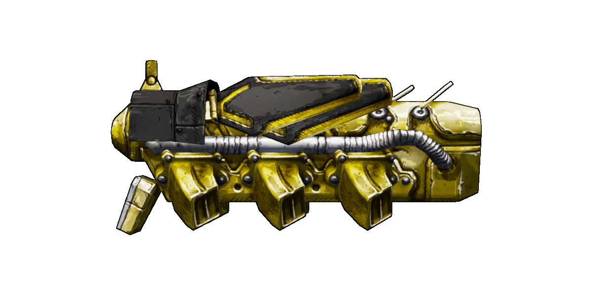
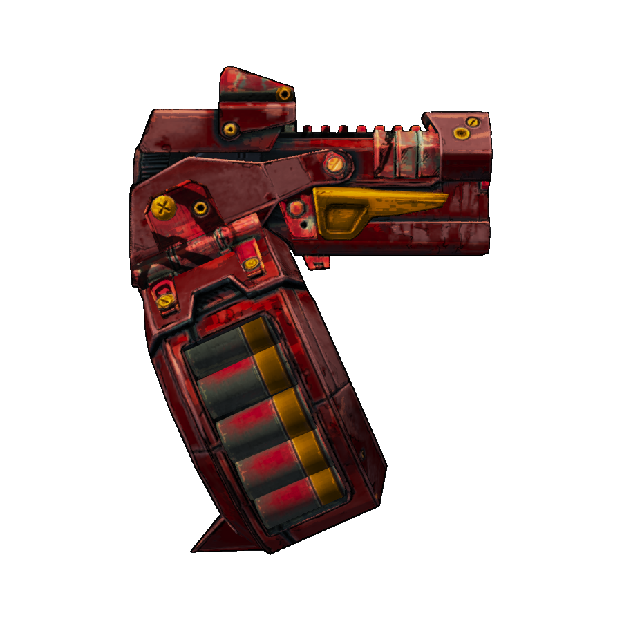

| Accessory | Barrel | Body |
|---|---|---|
| Grip | Sight | Stock |
Other parts include the element, the material, weapon balance, and the weapon type definition.
Accessory
There are 8 accessories, as well as one "no accessory" part, which (obviously) gives no bonuses.| Bayonet 1 | Bayonet 2 | Moon Clip1 | Shotgun Shell1 |
|---|---|---|---|
| +50% Melee Damage | +50% Melee Damage |
×1.3 Mag Size
×1.15 Reload Time |
×1.03 Weapon Damage
×1.03 Fire Rate ×1.05 Mag Size 1.05 Reload Time |
| Tech 11 | Tech 2 | Tech 3 | Vertical Grip |
|
1.15 Weapon Damage
×1.12 Fire Rate 1.4 Weapon Spread 1.39 Zoom FOV |
1.1 Weapon Spread
1.39 Zoom FOV ×1.5 Crit Damage |
1.03 Weapon Damage
×1.15 Fire Rate ×1.15 Mag Size 1.25 Reload Time |
×1.21 Fire Rate
×1.3 Weapon Spread ×1.15 Min Accuracy 1.3 Max Accuracy +2 Projectile Count |
1 These all use the same model.
All accessories have set prefixes associated with them based on manufacturer, which, assuming they don't get overwritten, are a simple way to tell which one exactly a weapon has. Click here for a table showing these.
Barrel
There are 7 non-unique barrels.| Bandit | E-Tech1 | E-Tech Hyperion1 | Hyperion |
|---|---|---|---|
|  | |||
|
×1.12 Weapon Damage
1.24 Fire Rate +1 Mag Size ×1.7 Weapon Spread ×1.15 Min Accuracy ×1.5 Impulse Accuracy +8 Projectile count +2 Shot Cost |
×4.5 Weapon Damage
1.09 Fire Rate 1.25 Reload Time ×1.25 Impulse Accuracy -5 Projectile Count ×2 Shot Cost +200% Status Effect Chance |
×6 Weapon Damage
+0.5, ×1.09 Fire Interval2 1.25 Reload Time 3 Weapon Spread 1.5 Max Accuracy ×1.25 Impulse Accuracy -5 Projectile Count ×2 Shot Cost +200% Status Effect Chance |
1.12 Weapon Damage
1.1 Mag Size 1.35 Weapon Spread 1.25 Min Accuracy 1.1 Impulse Accuracy |
| Jakobs | Tediore | Torgue |
|---|---|---|
|
×1.06 Weapon Damage
1.15 Fire Rate ×1.5 Weapon Spread ×1.1 Min Accuracy ×1.75 Impulse Accuracy +4 Projectile Count +1 Shot Cost | - |
×1.18 Weapon Damage
1.36 Fire Rate +2 Mag Size ×1.9 Weapon Spread ×1.2 Min Accuracy ×1.9 Impulse Accuracy +11 Projectile Count +3 Shot Cost |
1 These both use the same model, but (unsupringly) the Hyperion version only spawns on Hyperion guns.
2 This increases the time between shots, decreasing fire rate, but the exact amount depends on what the existing fire rate was. The two bonuses are applied at different times in the calculation.
2 This increases the time between shots, decreasing fire rate, but the exact amount depends on what the existing fire rate was. The two bonuses are applied at different times in the calculation.
Bodies
The body of a shotgun is based entirely on it's manufacturer and rarity. The manufacturer determines the model, while the rarity determines the bonuses.| Bandit | Hyperion | Jakobs | Tediore | Torgue |
|---|---|---|---|---|
|  |
| Rarity | Weapon Damage | Mag Size | Weapon Spread |
|---|---|---|---|
| Common | - | - | - |
| Uncommon | ×1.24 | ×1.21 | ÷1.15 |
| Rare | ×1.48 | ×1.35 | ÷1.25 |
|
Very Rare
Pearlescent Effervescent |
×1.72 | ×1.49 | ÷1.35 |
Grips
There are 5 non-unique grips.| Bandit | Hyperion | Jakobs | Tediore | Torgue |
|---|---|---|---|---|
 |
||||
|
×1.25 Mag Size
×1.1 Reload Time ×1.15 Weapon Spread |
1.09 Weapon Damage
1.15 Weapon Spread 1.1 Accuracy Regen |
×1.12 Weapon Damage
×1.09 Fire Rate ×1.05 Reload Time 1.1 Impulse Accuracy |
1.06 Weapon Damage
1.1 Mag Size 1.2 Reload Time |
×1.09 Weapon Damage
×1.1 Reload Time ×1.1 Weapon Spread 1.15 Impulse Accuracy |
Sights
There are 5 non-unique sights with models, as well as one "no sight" part. Sights are unique in that all of their bonuses only apply when aiming down them.| None | Bandit | Hyperion |
|---|---|---|
|
1.25 Weapon Spread
3 Movement Speed |
1.39 Zoom FOV
1.25 Weapon Spread 3 Movement Speed |
3.34 Zoom FOV
1.4 Weapon Spread 3 Movement Speed |
| Jakobs | Tediore | Torgue |
|
2.82 Zoom FOV
1.5 Weapon Spread 3 Movement Speed |
1.78 Zoom FOV
3 Movement Speed |
1.52 Zoom FOV
1.2 Weapon Spread 3 Movement Speed |
| Bandit | Hyperion | Jakobs | Tediore | Torgue |
|---|---|---|---|---|
| - |
1.4 Min Accuracy
1.2 Accuracy Regen |
1.5 Min Accuracy
×1.25 Max Accuracy ×1.25 Accuracy Regen 1.1 Impulse Accuracy |
×1.15 Min Accuracy
×1.15 Max Accuracy ×1.1 Impulse Accuracy |
×1.2 Accuracy Regen
×1.25 Impulse Accuracy |
Element
Element is one of the miscellaneous parts. They have no model, but instead add lights over the weapon in that element's colours. There are six non-unique element parts, one for each element, and one for no element. None of them give any bonuses.Material
Material is one of the miscellaneous parts. Rather than having it's own model, it is the actual textures applied to the other models.Material is based entirely on manufacturer and rarity. Each manufacturer has a material for each rarity. In TPS Hyperion actually has two materials per rarity, the standard one and an "Old Hyperion" one. Unique weapons also tend to have their own, forced, materials.
Most materials provide no stat bonuses. There are two exceptions to this: Gemstone and Old Hyperion materials.
| Quartz Gemstone | Other Gemstone | Old Hyperion |
|---|---|---|
|
+15% Crit Damage
+15% Reflect Off Self Chance -80% Reflect Off Self Self Damage -20% Reflect Off Self Damage |
+15% Crit Damage
+15% Reflect Off Self Chance -80% Reflect Off Self Self Damage -30% Reflect Off Self Damage |
×1.7 Weapon Damage
1.5 Fire Rate ×1.15 Reload Time ×1.5 Weapon Spread ×3 Min Accuracy 1.3 Max Accuracy |
Weapon Balance
The Weapon Balance defines what parts a certain weapon can have. Balances themselves do not affect stats, but are they very important for the actual generation of weapons.Weapon Type Definition
Like the name might suggest, the definition basically defines each weapon. It defines how large exactly each bonus actually is, all the formulas for each stat, as well as several other properties relating to how exactly the weapon behaves.These get rather complicated and generally you only care about them when trying to calculate exact stats, so click here for a proper guide on them, and on how exactly the calculations work.
Manufacturer Bonuses
Parts can give additional bonuses based on the manufacturer of the weapon.A well known example of this is matching grip bonus, but barrels actually also provide matching manufacturer bonuses.
Note that Old Hyperion is considered a different manufacturer to Hyperion.
| Manufacturer | Barrel | Grip |
|---|---|---|
| Bandit |
×1.05 Weapon Damage
1.2 Impulse Accuracy |
+3 Mag Size
1.3 Reload Time |
| Hyperion |
×1.1 Weapon Damage
1.15 Weapon Spread ×1.2 Impulse Accuracy1 |
+1 Mag Size
1.3 Reload Time |
| Jakobs |
×1.1 Weapon Damage
1.15 Weapon Spread 1.2 Impulse Accuracy +2 Projectile Count |
+1 Mag Size
1.3 Reload Time -0.2 Impulse Accuracy |
| Tediore | - |
+2 Mag Size
-0.15 Reload Time |
| Torgue |
×1.2 Weapon Damage
-0.05 Fire Interval2 |
+1 Mag Size
-0.3 Reload Time |
1 While this type of bonus would be bad on all other manufacturers, on Hyperion it's actually good. See my accuracy guide for more.
2 This decreases the time between shots, increasing fire rate, but the exact amount depends on what the existing fire rate was.
2 This decreases the time between shots, increasing fire rate, but the exact amount depends on what the existing fire rate was.
Two parts also have bonuses when on different manufacturers.
| E-Tech Barrel | Hyperion Barrel |
|---|---|
|
On Bandit
+3 Mag Size +4 Weapon Spread +2 Projectile Count +1 Shot Cost |
On Jakobs
1.4 Weapon Spread |